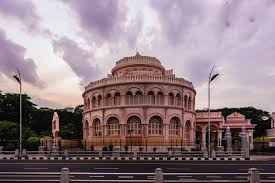
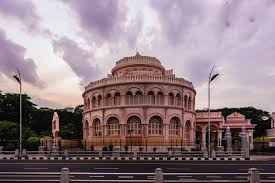
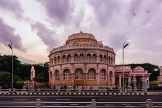
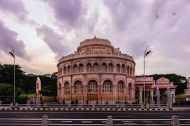

Chennai,[d] also known as Madras[e] (its official name until 1996), is the capital and largest city of Tamil Nadu, the southernmost state of India. It is located on the Coromandel Coast of the Bay of Bengal. According to the 2011 Indian census, Chennai is the sixth-most-populous city in India and forms the fourth-most-populous urban agglomeration. Incorporated in 1688, the Greater Chennai Corporation is the oldest municipal corporation in India and the second oldest in the world after London. Historically, the region was part of the Chola, Pandya, Pallava and Vijayanagara kingdoms during various eras. The coastal land which then contained the fishing village Madrasapattinam, was purchased by the British East India Company from the Nayak ruler Chennapa Nayaka in the 17th century. The British garrison established the Madras city and port and built Fort St. George, the first British fortress in India. The city was made the winter capital of the Madras Presidency, a colonial province of the British Raj in the Indian subcontinent. After India gained independence in 1947, Madras continued as the capital city of the Madras State and present-day Tamil Nadu. The city was officially renamed as Chennai in 1996